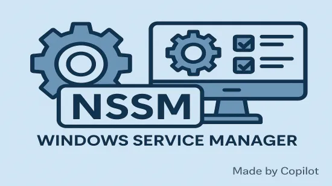

NSSM을 이용한 Windows 응용프로그램 서비스 등록 및 관리

1. NSSM 파일 다운로드 및 시스템 환경변수 설정
- NSSM - the Non-Sucking Service Manager - Download에서 Windows 10, Server 2016 and newer의 Latest release 항목 참고하여 다운로드
- C드라이브에 파일 저장
- 시스템속성 창 → 고급 탭 → 환경변수 클릭 → 시스템 변수에 Path 선택 → 새 항목 추가
2. NSSM 서비스 이용
2.1. 초기 서비스 등록
- 파워쉘 명령줄 실행
nssm install MyService # SSS는 프로그램 설치 명칭
- NSSM service installer GUI 창이 표시
- Path: 실행 프로그램 실제 exe 파일 경로
- Startup directory: 실행 프로그램이 위치한 디렉토리 경로로 Path 등록하면 자동으로 입력
- Arguments: run –flow “흐름명” –environment “환경명”
- Details 탭: 서비스 이름, 설명 입력
- Log on 탭: 필요 시 특정 사용자 계정으로 실행 설정
- I/O 탭: 로그 파일 경로 지정 (실패 시 원인 확인 가능)
- 설정 저장 후에는 윈도우 서비스에 이름 등록된 상태 확인
2.2. 기타 명령어 일람
nssm edit MyService # NSSM service installer GUI 창이 표시
nssm start MyService # 서비스 시작
nssm stop MyService # 서비스 종료
nssm restart MyService # 서비스 재시작
nssm remove MyService # 서비스 제거
3. 작업 스케줄러 설정
- 일반 탭
- 사용자가 로그온했을 때만 실행: UI 작업이 수반되는 경우 체크
- 가장 높은 권한으로 실행: 관리자 권한 필요 시 체크
- 구성 대상: 호환성 고려 하위 운영체제 선택
- 트리거 탭
- 실행 조건 지정
- 동작 탭
- 프로그램/스크립트: nssm.exe 경로
- 인수 추가(Arguments): start MyService
- 조건
- 컴퓨터의 AC 전원이 켜져 있는 경우에만 실행 체크
- 이 작업을 실행하기 위해 절전모드 종료 체크
- 설정
- 요청시 작업이 실행되도록 허용 체크
- 다음 시간 이상 작업이 실행되면 중지 1시간 설정
- 요청할 때 실행 중인 작업이 끝나지 않으면 작업 중지 체크
- “실패 시 다시 시도” 옵션도 설정 가능
4. 문제점
- 일반 응용프로그램과 같이 프로세스가 독립적으로 메모리에 올라와서 UI와 기능을 제공하는 경우에는 작동에 문제가 없었으나, 하나의 실행파일로 동작하지 않고 서비스, 런타임, UI가 함께 동작하는 Power Automate Desktop같은 플랫폼은 트리거에 문제가 있어 실사용이 불가능